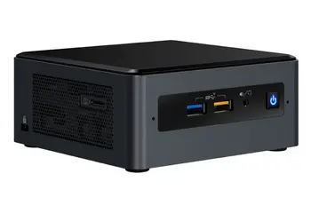
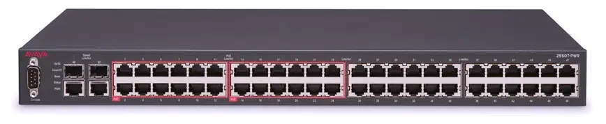
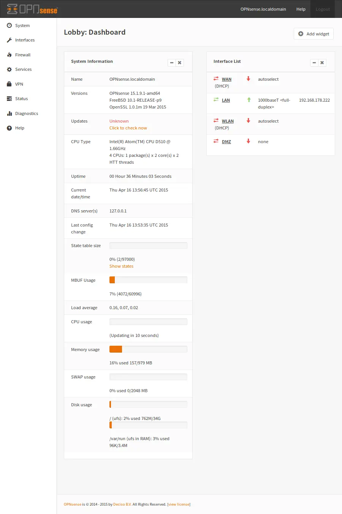
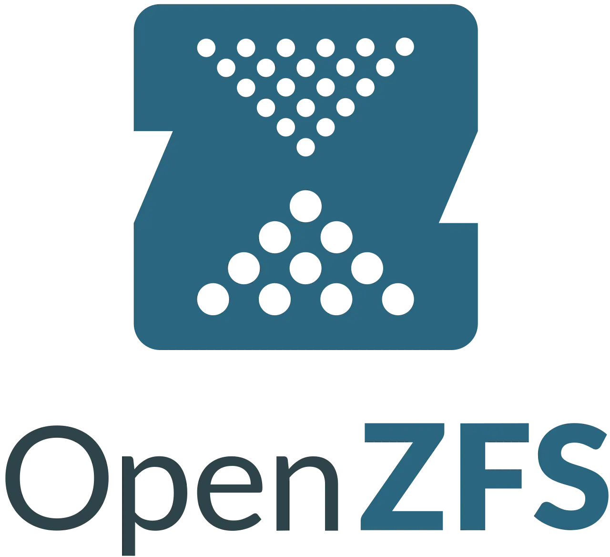
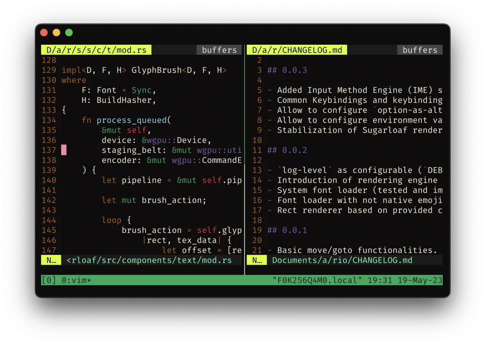

Build the agent VM
on the Proxmox box
Everything you need at the keyboard: the go/no-go, the guest type, the spec plate, eight build steps, the firewall rules, and the snapshot policy that gives you a real undo button.
Proxmox's own container documentation says plainly that "Containers use the kernel of the host system. This exposes an attack surface for malicious users. In general, full virtual machines provide better isolation"[1], LXC upstream says privileged containers "aren't and cannot be root-safe"[2], and Anthropic sends untrusted repositories to "a dedicated virtual machine" for kernel-level separation[3].
Plain SSH + tmux is the primary interface, VS Code Remote-SSH the comfortable second. Clone the repo inside the guest — never mount your workstation's home into it. Disk-only ZFS/LVM-thin snapshots are the undo button[5]. Isolation is enforced by the guest-NIC firewall on the host side, which cannot be switched off from inside the guest[4].
Go / no-go
tick one, or stop readingUntrusted repo
A repository you didn't write, or one whose dependency tree you haven't audited.
Unattended run
Anything you'd otherwise start with --dangerously-skip-permissions and walk away from.
Fresh dependency install
One npm install is enough: the June 2026 Mastra compromise poisoned 140+ packages, and a postinstall dropper harvested "credentials and tokens present on developer workstations"[14].
NONE TICKED → don't build this. Reviewing your own code with prompts you wrote is a job for the workstation-local sandbox — see Linux-native sandboxing on the workstation. This guest is for the three cases above, and it earns its keep in exactly those.
Pick the guest type
the answer is already decided — here's whyUnprivileged LXC
- Escape needs
- A generic kernel bug; the attacker lands as an unprivileged host UID[1][2]
- Docker inside
- Broken outright on current Proxmox kernels — runc needs
CAP_NET_ADMINover the namespace and Docker's AppArmor probe is host-root-owned: "no configuration change can overcome this fundamental namespace limitation"[8] - Also
- FUSE mounts are "strongly advise[d] against" because containers must be frozen for snapshot backups[1] — which collides with using snapshots as your undo button.
Privileged LXC
- Escape needs
- A container-escape bug that upstream will not treat as a CVE[7]
- The nesting trap
- To get Docker you set
nesting=1,keyctl=1,fuse=1,lxc.apparmor.profile: unconfinedand clear the capability drops. Verdict: "a performance choice, not security choice"[8] - Proxmox staff
- "it can still be possible to break out of the LXC when nesting is enabled"[9]; containers "can leak or interfere with the host under extreme conditions"[41]
KVM VM
TOTAL PRICE OF THE VM OVER AN LXC: ~200 MB of RAM and a couple of seconds of boot[8]. That is the cheapest security upgrade in this document.
An unprivileged LXC does protect the host filesystem from rm -rf / inside the guest, a trashed toolchain, and a stray chmod 777. It does not protect against a kernel-level exploit, against whatever you switched off to make Docker work, or against anything on your LAN — that last one is a firewall problem, not a container problem.
Spec plate
sizing for a mini PCcpulimit unset--agent 1Dynamic allocation reclaims memory when host usage crosses ~80%, and the balloon driver releasing RAM mid-build is how you get a mysterious heap out of memory halfway through an agent run[17].
From PVE 8.1 onward the in-RAM read cache defaults to 10% of host memory clamped to 16 GiB, sized as 2 GiB base plus 1 GiB per TiB of pool. Older installs may still be uncapped at 50%+ and will quietly starve the guest — inspect /etc/modprobe.d/zfs.conf and set options zfs zfs_arc_max=<bytes>[16]. Proxmox itself wants 2 GB for the OS and its services, plus whatever you designate to guests[15].
Why these numbers
4 cores. cores is what the guest sees; cpulimit caps total host CPU time as a fraction, so 4 cores can draw up to 400%[17]. A test suite that saturates four cores is exactly what you want off your desktop.
8 GB, pinned. tsc heap scales with type surface, not code size — 61 MB on an empty project, 465 MB once aws-sdk types are in scope, and large projects "run very close to the node memory limit, and would frequently just go out of memory"[42]. Stack a language server, jest workers and a dev server on that and 4 GB is not enough.
ZFS or LVM-thin, not qcow2 on a directory. Both snapshot natively at block level; qcow2-on-directory/NFS snapshots "block a running VM" and can take minutes to hours on large disks[5].
Adding a JetBrains Gateway backend? Budget more. Their guidance for larger projects is to "add more CPUs and RAM", enable swap "even on cloud instances", and use local SSD storage[20].

Build procedure
host → guest → workstationBuild a cloud-init template, once
VM IDs from 9000 up keep templates visually separate from running guests[37]. You will rebuild the agent guest more often than you expect — make cloning cheap.
# on the Proxmox host
wget https://cloud-images.ubuntu.com/noble/current/noble-server-cloudimg-amd64.img
qm create 9000 --name ubuntu-cloud --memory 2048 --cores 2 \
--net0 virtio,bridge=vmbr0
qm importdisk 9000 noble-server-cloudimg-amd64.img local-lvm
qm set 9000 --scsihw virtio-scsi-pci --scsi0 local-lvm:vm-9000-disk-0
qm set 9000 --ide2 local-lvm:cloudinit --boot c --bootdisk scsi0 \
--serial0 socket --vga serial0
qm set 9000 --ciuser dev --sshkey ~/.ssh/agentvm.pub --ipconfig0 ip=dhcp \
--agent 1 --ciupgrade 1
qm template 9000
Clone the agent guest and size it
--balloon 0 pins the RAM instead of letting the host reclaim it mid-build; virtio-scsi-single plus an IO thread is documented current best practice, and discard=on keeps the thin volume from growing forever as the agent churns node_modules[17].
qm clone 9000 210 --name agentvm --full qm resize 210 scsi0 +64G qm set 210 --cores 4 --memory 8192 --balloon 0 \ --scsihw virtio-scsi-single \ --scsi0 local-lvm:vm-210-disk-0,discard=on,ssd=1,iothread=1 \ --net0 virtio,bridge=vmbr0,firewall=1 qm start 210
Provision inside the guest — as dev, never root
--dangerously-skip-permissions is blocked when running as root on Linux, and that check is skipped only inside a recognized sandbox[39]. Provision a normal non-root user or the unattended path won't start.
sudo apt update && sudo apt install -y \ qemu-guest-agent git tmux mosh build-essential ca-certificates curl sudo systemctl enable --now qemu-guest-agent # docker via the official repo — a plain install, because this is a VM curl -fsSL https://get.docker.com | sh && sudo usermod -aG docker dev # claude code npm install -g @anthropic-ai/claude-code
Adding dev to docker is root-equivalent inside the guest. That's acceptable because the guest is the boundary — it is exactly what would be unacceptable on your workstation. Anthropic makes the same point about /var/run/docker.sock: exposing it "effectively grants access to the host system"[39].
Then make every login land in a persistent session, so a dropped connection never kills a running agent. Add to ~/.bashrc:
# land in a persistent session on every login
if [[ -z "$TMUX" && -n "$SSH_CONNECTION" ]]; then
tmux new-session -A -s agent
fi
Turn the firewall on — both flags
Datacenter → Firewall → Options → enable: 1, then write /etc/pve/firewall/210.fw (rule cards in Step 4 below). firewall=1 was already set on net0 in step 2 — both flags are required, because "Each virtual network device has its own firewall enable flag"[4].
Take the baseline snapshot, before any repo exists
This is the one snapshot you never delete. Clean toolchain, firewalled, no code.
qm snapshot 210 base --description "clean toolchain, no repos, firewalled"
Get the repo in — from the forge, with a per-repo deploy key
A GitHub deploy key is "an SSH key that grants access to a single repository", read-only by default, with the private half living on the server[36]. Generate it in the guest. Accept the documented downsides: no passphrase, no expiry — so rotate[36]. If the agent needs to push, use a second write-enabled key or a token scoped to that one repo.
ssh-keygen -t ed25519 -f ~/.ssh/deploy_myrepo -N "" # paste ~/.ssh/deploy_myrepo.pub into repo Settings → Deploy keys # (leave write access off) git clone git@github.com:me/myrepo.git ~/src/myrepo
Daily driving
Claude Code is a TUI, so a terminal is its native habitat. Move results back out with scp/rsync initiated from the workstation (pull, don't push), or push a branch from the guest and review the diff on your side.
$ ssh agentvm # lands in tmux via the .bashrc snippet $ cd ~/src/myrepo && claude
Firewall rule cards
/etc/pve/firewall/210.fwTwo things the agent must never reach: the rest of your LAN, and the Proxmox host itself (8006 web UI, 22 SSH — a foothold there is game over). Enforce it at the hypervisor: the Proxmox firewall runs as an iptables-based service on each node rather than inside the guest[4]. An agent with root in the guest can flush the guest's own ufw rules; it cannot touch rules enforced on the host side of the tap device.
Three levels exist — cluster (/etc/pve/firewall/cluster.fw), host (/etc/pve/nodes/<node>/host.fw) and per-guest (/etc/pve/firewall/<VMID>.fw)[4]. You only need the last one, plus one IPSET in the first.

[OPTIONS] enable: 1 · policy_in: DROP · policy_out: DROP — default-deny both directions, then punch the four holes you actually need.
SSH, from your workstation's IP only. Nothing else on the LAN can knock.
Only if you use Mosh. Auth is still SSH — Mosh "logs in to the server via SSH" and then hands off to UDP[21].
DNS to the router, and only the router. Without this, everything else looks broken.
The whole point. These sit above the broad port-443 accept, so LAN destinations are dropped before the general egress rule can allow them. The Proxmox host's own management IP lives inside 192.168.1.0/24, so it's covered here too.
The internet, for registries and the API. Broad by necessity — see the caution below.
Git over SSH, to an [IPSET forges] defined in cluster.fw and populated from GitHub's published ranges. Reusable bundles live in [GROUP name], address lists in [IPSET name], referenced as +setname[4].
The docs make a Simple zone sound like a boundary — it "will create an isolated VNet bridge", "is not linked to a physical interface, and VM traffic is only local on each the node"[31]. In practice Simple zones do not isolate guests from each other by default, because "currently simple zones don't use dedicated vrf"; real separation still needs layered Proxmox firewall rules — accept intra-subnet, accept the gateway, drop all cross-subnet[32]. Treat SDN as plumbing and the firewall as the boundary.
Egress allowlisting is weaker than it looks. A hostname-based proxy decides "from the client-supplied hostname without inspecting TLS", so code inside can use domain fronting to reach hosts outside the allowlist, and "Allowing broad domains such as github.com can create paths for data exfiltration"[39]. An IP-based firewall rule is coarser still. Segmentation buys you LAN protection reliably; it does not buy you exfiltration protection.
Alternate topology · dedicated VLAN
If you already run OPNsense, put the policy where you already audit it. Make vmbr0 VLAN-aware and tag the guest's NIC — the tag is part of the guest's network config and needs no in-guest setup[30]. Then add the VLAN under Interfaces → Other Types → VLAN, assign and enable it, give it a static gateway IP, serve DHCP+DNS, and write interface rules that allow the VLAN out to the internet and block it to every other local network[33]. This survives you forgetting to re-tick the per-NIC firewall flag.
auto vmbr0
iface vmbr0 inet manual
bridge-ports eno1
bridge-stp off
bridge-fd 0
bridge-vlan-aware yes
bridge-vids 2-4094
And for a throwaway "review this untrusted repo" guest that needs no network at all, a bridge with no physical port isolates it completely; add internet back with NAT only if you want it[30][31].
auto vmbr99
iface vmbr99 inet static
address 10.99.0.1/24
bridge-ports none
bridge-stp off
bridge-fd 0

Snapshot policy
the real undo buttonProcedure · disk-only snapshots, four states
qm snapshot 210 baseTaken before any repo is cloned. Never delete this one.
qm snapshot 210 "pre-$(date +%Y%m%d-%H%M)"One before each unattended run.
qm delsnapshot 210 pre-…Delete the pre-flight once the diff is reviewed.

- Skip
--vmstate. A RAM snapshot writes a vmstate volume the size of guest memory — one forum user saw a ~21 GB ZFS dataset appear per snapshot regardless of how little changed on disk[28]. It also drags the guest's clock back to snapshot time on rollback. - Accept crash-consistency. Without RAM, "it will be as if the LXC/VM encountered a power outage and crashed"[28]. A git working tree and a
node_modulestree recover from a hard power cut. - Pass
--start.qm rollbackwon't auto-start the guest unless you ask; RAM snapshots start automatically[24]. - Install the guest agent anyway. With
qemu-guest-agentrunning andqm set 210 --agent 1, Proxmox callsguest-fsfreeze-freezeandguest-fsfreeze-thawaround the snapshot "to improve consistency"[29]. It also gives you theqm guest execchannel[24]. - Cap it at 3–4 live snapshots. Thin/CoW snapshots are cheap to create but they pin the blocks they diverge from — a forgotten snapshot plus a churning
node_modulesis how a 100 GB thin pool fills up. - Snapshots are an undo button, not a backup. They live on the same pool as the guest. Backups are a separate concern.
qm listsnapshot 210 qm delsnapshot 210 pre-20260730-0900 # containers use identical verbs: pct snapshot / rollback --start / # listsnapshot / delsnapshot
Unattended runs
batch it, don't babysit itFor anything you'd otherwise run with --dangerously-skip-permissions, don't sit in front of it — drive it as a batch job and read the result. -p/--print runs the same agent loop non-interactively and exits; --output-format json returns the result plus session ID, usage and total_cost_usd; --bare skips auto-discovery of hooks, plugins, MCP servers and project memory so the run is reproducible and only your explicit flags apply[23]. --resume "$session_id" continues a specific conversation from the same directory[23].
$ ssh agentvm 'cd ~/src/myrepo && claude --bare -p "run the test suite \
and fix failures" --allowedTools "Bash,Read,Edit" \
--output-format json' | jq -r '.result'
Two Proxmox-side hatches need no SSH at all, because they go host → guest over the QEMU guest agent channel — handy for recovery when you've firewalled yourself out[24]. Containers have pct exec and pct enter[25].
qm guest exec 210 -- <cmd> qm guest exec-status 210 <pid>
Wiring, ranked
by how much trust it moves into the guestSix options, ranked by how much of your trust each one moves into the guest. A February 2026 practitioner write-up of exactly this shape drives Claude Code over mosh + tmux, with shell config auto-attaching on login — "every time I SSH into the work PC, I want to land directly in a tmux session. If the session already exists, attach to it" — and Claude Code hooks firing notifications to a self-hosted ntfy on completion, errors and questions[22]. The friction they report is mobile-specific; from a desktop over LAN it is just a terminal.

Do not mount your workstation
every mount is a hole through the boundary/, /var or /etc into a container - this poses a great security risk"[7]
A writable mount of ~/projects means a compromised agent can plant a postinstall hook, a .git/hooks/pre-commit, or an executable on your workstation's $PATH. Anthropic flags exactly this class of escalation: "Allowing writes to directories containing executables in $PATH, system configuration directories, or user shell configuration files such as .bashrc or .zshrc can lead to code execution in different security contexts"[39].
Hazard register
where your workstation is still trustedSSH agent forwarding
Anyone with root on the remote host can use the forwarded socket to authenticate as you to every other system your keys reach — no private key theft required[35].
FIX · Never to this guest. Per-repo deploy key inside it; ProxyJump if you must reach a third host.
X11 forwarding
In trusted mode a malicious remote can "capture keystrokes and mouse events", "inspect or manipulate other application windows", "read from or write to the clipboard and selections", and screenshot your display[34].
FIX · Don't forward for a TUI workflow. If you must, ssh -X with ForwardX11Trusted no — never ssh -Y[34].
Wayland
No -Y equivalent exists, which is a feature here.
FIX · Headless testing in the guest; pull screenshots out as files.
Clipboard
Nothing in the terminal path shares a clipboard — but noVNC/SPICE consoles do, and so does a shared X server.
FIX · Use SSH, not the Proxmox console, for daily work.
Editor server & extensions
The VS Code Server runs as the user you signed in with, and workspace extensions get full access to the source, remote filesystem and remote APIs[18].
FIX · Acceptable — that user is inside the boundary. Don't sign in as root; every extension you install joins the guest's attack surface.
Credentials you put in the guest
Anything in the guest's ~/.ssh, ~/.aws, ~/.npmrc or environment is reachable by the agent. The hypervisor does not help here.
FIX · Minimum bar: nothing in that guest is reusable anywhere else. See Credential isolation.
Acceptance checks
run these before you trust itagent tmux session.
dev, not root, and docker is in the group list.
+forges is populated; a hang here means the IPSET is empty.
When to reach for this guest
friction verdictUse both boundaries. The workstation-local sandbox is the right default for reviewing your own code with prompts you wrote — Anthropic's own framing is that "Sandboxing reduces risk but is not a complete isolation boundary"[39]. This VM earns its keep in three specific situations, and its daily friction is one ssh plus the occasional "the file isn't on this machine" moment.
Unaudited dependencies
The install itself is the threat — and four dedicated vCPUs churn while you keep working[17].
nesting and keyctl on so Docker works, and ~/projects bind-mounted in so the editor feels normal. That has the operational cost of a separate machine and the security properties of running the agent locally as root[8][9]. Per-language LXC dev containers over Remote-SSH work fine as a dependency-hygiene setup[40] — that is a different problem. If the reason you're building this is that an agent runs code you didn't write, spend the 200 MB and boot the VM.